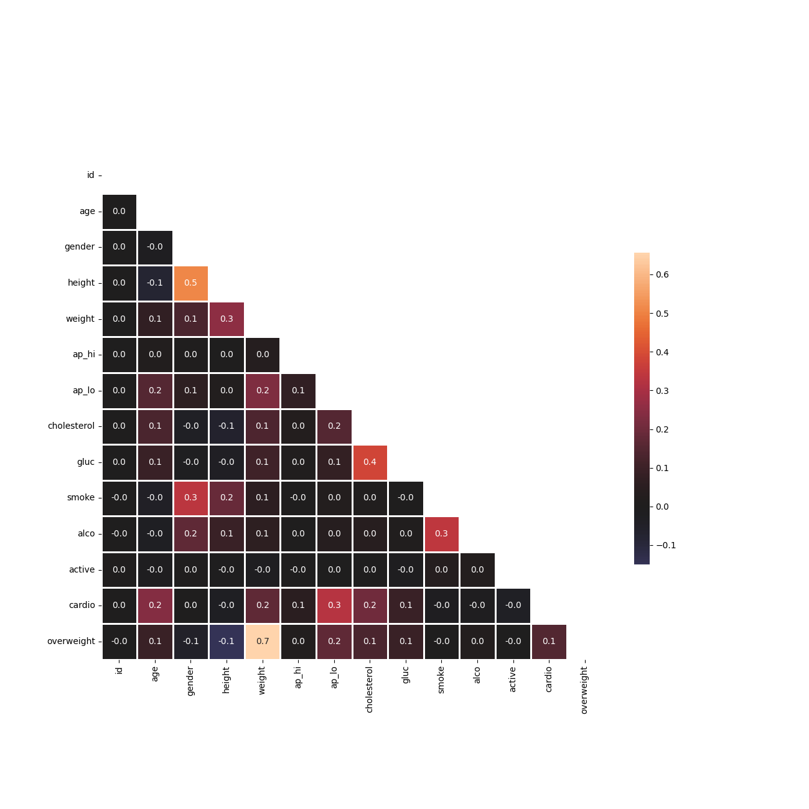
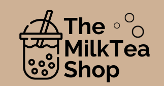

Here are my most recent projects!
Skills: Data Analysis | Power BI | Python | HTML5 | CSS
Video Game Sales Dashboard
(Power BI)
I developed a dynamic data visualization dashboard using a comprehensive video game sales dataset sourced from Kaggle. Through this project, I conducted an in-depth analysis of the top-performing video games and platforms based on global sales. The dashboard offers a user-friendly interface to explore these insights and provides an interactive platform for gaining valuable information about the video game industry.
Data Analysis of Demographic Trends Using Pandas
(Jupyter Notebook/Python3/Pandas)
In this project, I undertook the task of dissecting demographic data using the powerful Python library, Pandas. My objective was to gain insights from a dataset sourced from the 1994 Census database, offering a snapshot of societal characteristics during that period.
Medical Data Visualizer
(Jupyter Notebook/Python3/Pandas/Matplotlib/Seaborn)
In this project, I analyzed medical examination data using matplotlib, seaborn, and pandas. The dataset comprises patient data which I used to explore the relationship between cardiac disease and other factors.

Page View Time Series Visualizer
(Google Colab/Python3/Pandas/Matplotlib/Seaborn)
Visualized time series data using Pandas, Matplotlib, and Seaborn, revealing patterns and growth in daily page views on the freeCodeCamp.org forum from 2016-05-09 to 2019-12-03. Implemented functions to draw line charts, bar charts, and box plots for in-depth data analysis and visualization.
Product Landing Page
(HTML5/CSS)
In this project, I set out to create an enticing and effective product landing page to market a product of my choice, with a focus on the beloved beverage, Boba Tea.
Technical Documentation
(HTML5/CSS)
I honed my HTML and CSS skills by creating a technical documentation website for my personalized strength training routine. This project allowed me to apply my web development knowledge to present my workout program, exercise techniques, and training principles in an interactive and user-friendly format.